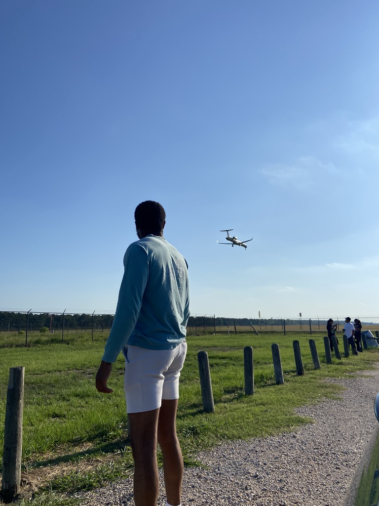

Marqua Walton Resume

Objective:
Experienced and committed individual in search of dynamic and professional environment for
training/coaching from middle school to adult athletes.
Education:
- Wakefield High school, Arlington VA (2011 2015)
- Virginia Wesleyan University (2015-2016)
- NOVA (2016-2017)
- Lone star college (2018-2021)
Work Experience:
Camp Counselor
Chummey Gill Momentum Camp, Arlington VA
(August 2014- December 2018, year round)
- Created a fun and competitive environment for enhancing basketball skills
- Designed drills for campers and officiated basketball games
- Work directly with the Sports Director by being an active and enthusiastic leader, teacher and participant in developing programming, planning, and
overseeing daily activities scheduling, lesson plan and general operations
Camp Counselor
Tony Bentley Basketball Camp, Arlington VA
(August 2014- June 2018, summer only)
- Follow the weekly-prepared curriculum to ensure that all campers participate in all activities
- Lead and assist with sports structure focusing on individual and team tactics and concentrated skill areas
Coach at Basketball University AAU program 15u
(February 2019- August 2021)
- Practice twice a week going over different defensive and offensive
skills that could get players to the next level
- Weekends coaching individuals through various tournaments locally
or sometimes travel
- Effectively communicated information to parents and appropriate
administrative personnel
Awards/Achievements
- Arlington County second team all-region
- Wakefield Varsity boys basketball captain
- Basic First Aide
Contact Details